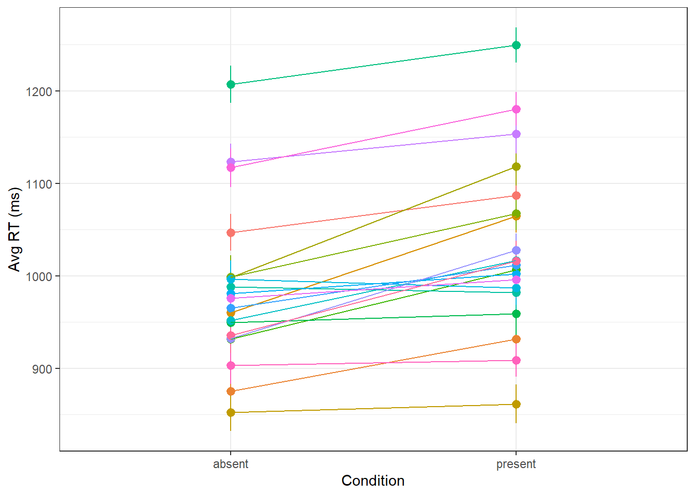
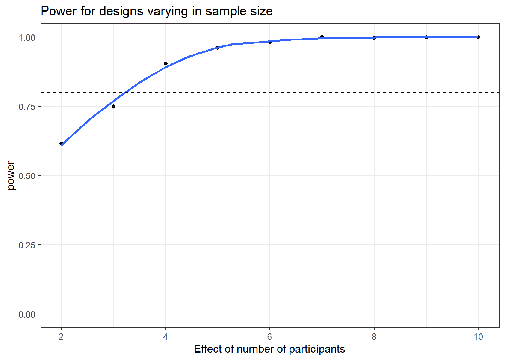

library(tidyverse)
library(lmerTest)OPAM workshop
shout-out to the work of Lisa DeBruine whose work heavily inspired this script.
import the libraries we need:
A single simulation
Set the combination of variables we want to test
n_sub <- 20 # number of subjects
n_trials <- 100 # number of trials per condition
b_0 <- 1000 # overall intercept
b_1 <- 50 # effect of my manipulation
tau_0 <- 80 # sd of random intercepts
tau_1 <- 30 # sd of random slopes
rho <- .2 # correlation of random effects
sigma <- 200 # irreducible noise on trialsThe random effects structure needs to be converted from what we wrote above into a covariance matrix: this cell takes care of that.
# calculate random intercept / random slope covariance
covar <- rho * tau_0 * tau_1
# put values into variance-covariance matrix
cov_mx <- matrix(
c(tau_0^2, covar,
covar, tau_1^2),
nrow = 2, byrow = TRUE)
subject_rfx <- MASS::mvrnorm(n = n_sub,
mu = c(0, 0),
Sigma = cov_mx)Now make the dataframe with all the combinations of participants and trials, and then get your outputs per trial!
df_sim <- crossing(
sub = 1:n_sub,
trial = 1:n_trials,
condition = c("absent","present")
) %>%
mutate(
sub = as.factor(sub),
b_0 = b_0,
b_1 = b_1,
t_0s = subject_rfx[sub,1],
t_1s = subject_rfx[sub,2],
sigma = rnorm(n(), 0, sigma),
rt = b_0 + t_0s + if_else(condition=="present",b_1 + t_1s, 0) + sigma
) %>%
dplyr::select(sub, condition, rt)Let’s make a little plot to check that all looks as it should.
df_sim %>%
ggplot(aes(x=condition, y=rt,group=sub, colour=sub)) +
stat_summary(fun.data = mean_se) +
stat_summary(geom="line",fun=mean) +
guides(color="none") +
theme_bw() +
ylab("Avg RT (ms)") +
xlab("Condition")
Looks good! Now to model:
m1 <- lmer(rt ~ condition + (1 + condition | sub), data=df_sim)
summary(m1)Linear mixed model fit by REML. t-tests use Satterthwaite's method [
lmerModLmerTest]
Formula: rt ~ condition + (1 + condition | sub)
Data: df_sim
REML criterion at convergence: 53829.3
Scaled residuals:
Min 1Q Median 3Q Max
-3.6523 -0.7047 -0.0141 0.6643 3.5293
Random effects:
Groups Name Variance Std.Dev. Corr
sub (Intercept) 6856.4 82.80
conditionpresent 579.8 24.08 0.21
Residual 40245.4 200.61
Number of obs: 4000, groups: sub, 20
Fixed effects:
Estimate Std. Error df t value Pr(>|t|)
(Intercept) 984.467 19.051 19.000 51.675 < 2e-16 ***
conditionpresent 46.944 8.321 19.000 5.642 1.94e-05 ***
---
Signif. codes: 0 '***' 0.001 '**' 0.01 '*' 0.05 '.' 0.1 ' ' 1
Correlation of Fixed Effects:
(Intr)
condtnprsnt 0.004 Looks like our “experiment” does pretty well at extracting the true parameter values!
Turning the simulation into a function
We want to call this simulation many times, so we wrap the above into a function to call many times! First, a function to generate a dataframe with experiment data:
sim_data <- function(
n_sub = 20,
n_trials = 100,
b_0 = 1000,
b_1 = 200,
tau_0 = 80,
tau_1 = 30,
rho = .2,
sigma = 200
){
# calculate random intercept / random slope covariance
covar <- rho * tau_0 * tau_1
# put values into variance-covariance matrix
cov_mx <- matrix(
c(tau_0^2, covar,
covar, tau_1^2),
nrow = 2, byrow = TRUE)
subject_rfx <- MASS::mvrnorm(n = n_sub,
mu = c(0, 0),
Sigma = cov_mx)
df_sim <- crossing(
sub = 1:n_sub,
trial = 1:n_trials,
condition = c("absent","present")
) %>%
mutate(
b_0 = b_0,
b_1 = b_1,
t_0s = subject_rfx[sub,1],
t_1s = subject_rfx[sub,2],
sigma = rnorm(n(), 0, sigma),
rt = b_0 + t_0s + if_else(condition=="present",b_1 + t_1s, 0) + sigma
) %>%
dplyr::select(sub, condition, rt)
return(df_sim)
}And now, we wrap that into a function that generates the data and runs the test we want on it, to obtain, among other things, a p value for each time we simulate!
single_run <- function(filename = NULL, ...) {
# ... is a shortcut that forwards any arguments to my_sim_data()
dat_sim <- sim_data(...)
# run lmer and capture any warnings
ww <- ""
suppressMessages(suppressWarnings(
mod_sim <- withCallingHandlers({
lmer(rt ~ condition + (1 + condition | sub),
dat_sim, REML = FALSE)},
warning = function(w) { ww <<- w$message }
)
))
# get results table and add rep number and any warnings
sim_results <- broom.mixed::tidy(mod_sim) %>%
mutate(warnings = ww)
# add columns for the specified parameters
params <- list(...)
for (name in names(params)) {
sim_results[name] <- params[name]
}
# append the results to a file if filename is set
if (!is.null(filename)) {
append <- file.exists(filename) # append if the file exists
write_csv(sim_results, filename, append = append)
}
return(sim_results)
}Putting it together
Now that we have this function, we can start simulating a bunch of times! This cell will take a while to run.
nreps <- 1000 # This is generally a good balance between computation time and reliability. Bigger is better, but might take prohibitively long to run.
params <- crossing(
rep = 1:nreps, # number of runs
n_sub = 20,
n_trials = 100,
b_0 = 1000,
b_1 = 40,
tau_0 = 80,
tau_1 = 30,
rho = .2,
sigma = 200
) %>% dplyr::select(-rep)
# This is where the magic happens!
sims <- purrr::pmap_df(params,single_run,filename=NULL)Now that we have our sims, read out the results:
# calculate mean estimates and power for specified alpha
alpha <- 0.05
sims %>%
filter(effect == "fixed") %>%
group_by(term) %>%
summarize(
mean_estimate = mean(estimate),
mean_se = mean(std.error),
power = mean(p.value < alpha),
.groups = "drop"
)# A tibble: 2 × 4
term mean_estimate mean_se power
<chr> <dbl> <dbl> <dbl>
1 (Intercept) 1000. 17.8 1
2 conditionpresent 39.9 8.88 0.983Looks good! Now you know how to use simulation to obtain an estimate of your study’s power!
Sensitivity analysis
But what if I want to see how the power of my design changes as one of the simulation parameters changes (like number of participants)? Well, we can just build on our simulation machinery to simulate across levels of a parameter value! Note, this will take even longer to run - and will save a file named sens1.csv to your current working directory - if that file already exists, it will read out that file rather than run the whole simulation again.
filename1 <- "sens1.csv"
nreps <- 1000 # number of replications per parameter combo
params <- crossing(
rep = 1:nreps, # repeats each combo nreps times
n_sub = 2:10,
n_trials = 50,
b_0 = 1000,
b_1 = 100,
tau_0 = 80,
tau_1 = 30,
rho = .2,
sigma = 200
) %>%
dplyr::select(-rep)
if (!file.exists(filename1)) {
# run a simulation for each row of params
# and save to a file on each rep
sims1 <- purrr::pmap_df(params, single_run, filename = filename1)
} else {
sims1 <- read.csv(filename1)
}Just like before, we can read out the data. We should also plot the power curve for a nice visual intuition of our results!
power1 <- sims1 %>%
filter(effect == "fixed", term == "conditionprimed") %>%
group_by(n_sub) %>%
summarise(
mean_estimate = mean(estimate),
mean_se = mean(std.error),
power = mean(p.value < alpha),
.groups = "drop"
)
power1 %>%
ggplot(aes(x=n_sub, y=power)) +
geom_point() +
geom_smooth(se = FALSE) +
ylim(0, 1) +
geom_hline(yintercept=0.8,linetype="dashed")+
scale_x_continuous(name = "Effect of number of participants") +
ggtitle("Power for designs varying in sample size") +
theme_bw()`geom_smooth()` using method = 'loess' and formula = 'y ~ x'Warning: Removed 6 rows containing missing values or values outside the scale range
(`geom_smooth()`).
And there you have it, we built all the tools we need for a simple sensitivity analysis! Happy simulating!